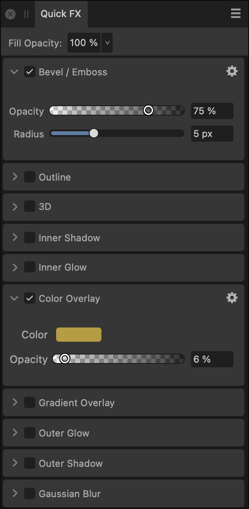

Apply layer effects directly to objects or layers using the Quick FX panel.
About the Quick FX panel
Layer effects can be applied to the currently selected object or entire layer. These effects are also completely non-destructive so you can change them at any time.

The Quick FX panel.
The following controls and effects are available in the panel:
Fill Opacity—alters the opacity of layer contents, without altering the opacity of the applied layer effect(s).
Bevel/Emboss—adds various combinations of highlights and shadows.
Outline—adds an outline to the layer content.
3D—adds lighting to give a 3D appearance.
Inner Shadow—adds a shadow inside the layer content's edges.
Inner Glow—adds a color glow that emanates from inside the layer content's edges.
Color Overlay—applies a solid color to layer content.
Gradient Overlay—applies a linear gradient to layer content.
Outer Glow—adds a color glow that emanates from outside the layer content's edges.
Outer Shadow—adds a shadow behind the layer content.